Variables Editor
Interactively view, edit, and analyze workspace variables
Description
The Variables editor enables you to view, edit, and analyze variables in the MATLAB® workspace. Changes that you make to variables in the Variables editor occur in the current workspace as soon as you enter them. For example, you can use the Variables editor to:
Navigate and explore variable contents.
Directly edit variable contents.
View variable edits as MATLAB code in the Command Window.
View sparklines and summary statistics for data in a table or timetable.
Visualize data in a plot linked with workspace variables.
Create a variable from selected data.
Open the Variables Editor
MATLAB Toolstrip: On the Home tab, in the Variable section, click New Variable or Open Variable.
Workspace panel: In the Workspace panel, double-click a variable to open it in the Variables editor. Alternatively, you can select variables, right-click your selection, and select Open Selection in the context menu.
MATLAB command prompt: Enter
openvar(varname), wherevarnameis a string scalar or character vector specifying the name of a variable in the MATLAB workspace.
Examples
You can navigate the contents of a variable in the Variables editor using the options in the Variable tab and keyboard shortcuts.
First, open a variable in the Variables editor. To move the view to a row
and column that you specify, on the Variable tab, in
the Navigate section, click Go
To. Then, enter the row number and the column number or
variable name. For example, for a table in the Variables editor that
contains a variable named LastName, move the view to row
40 of that variable.
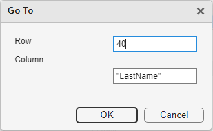
To search the contents of the open variable selection, on the
Variable tab, in the Navigate
section, click Find. Then, enter a value to find. For
example, for a table in the Variables editor that contains a variable named
LastName, search for the table row that contains the
name Cook. If you want to search within a selection of
the table instead of the entire variable, click the Find in selection button
in the Find toolbar.
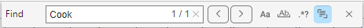
For a list of keyboard shortcuts to navigate your variable, see Keyboard Shortcuts.
You can interactively edit elements in variables such as matrices, cell arrays, and tables using the Variables editor. After editing a variable, you can view the generated code that represents your edits in the Command Window.
Edit Matrix
To edit an element in a matrix, click the element and type a new value. Press Enter or click another element to save the change. For example, for a matrix in the Variables editor, change the value of the fourth element.
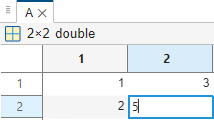
Edit Multidimensional Array
To navigate the contents of a multidimensional array, click the text that
indicates the current subset. For example, click (:,:,1),
which indicates that the Variables editor displays the first page of a
three-dimensional array.
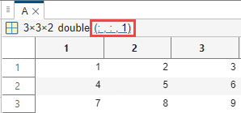
Then, use the numeric fields to specify another subset. For example, to
display the second page in a three-dimensional array, set the numeric field
for the third array dimension to 2.

To edit an element in the array, click the element and type a new value. Press Enter or click another element to save the change.
Edit Cell Array
To view the contents of a cell in a cell array, in the Variables editor, double-click the cell. Then, to edit an element in the cell, click the element and type a new value. Press Enter or click another element to save the change. To return to the parent cell array, on the Variable tab, in the Navigate section, click the Go Up button. For example, for a cell array in the Variables editor, change the value of the first element in the second cell.
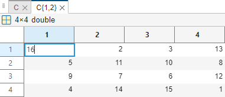
Edit Table
To edit the name of a table variable, double-click the name in the table variable header and type a new name. For example, for a table in the Variables editor, change the name of the first variable.
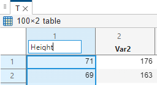
To reorder variables, click the header of a table variable so that a four-headed arrow appears. Then, drag the variable to a new position. For example, switch the order of two variables in a table.
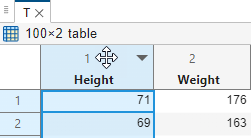
To modify the units and description of a table variable, pause on the header of a table variable. Then, to open the Table Property Editor, click the arrow that appears to the right of the variable name and select Edit Variable Properties. For example, specify units and a description for a table variable.
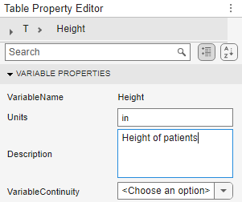
To sort data in a table, pause on the header of a table variable and click the arrow that appears to the right of the variable name. Then, select the sort order. For example, sort a table variable in ascending order.

View Generated Code
The Command Window displays MATLAB code that represents edits to some types of variables. If you want to suppress this display, on the View tab, clear Show MATLAB Code.
You can interactively resize data using the Variables editor.
To add a row or column to a matrix, right-click the header of a row or column and select an option from the context menu. For example, for a matrix in the Variables editor, insert a third row. Right-click the header of the second row and select Insert Row Below from the context menu. The inserted elements are assigned default empty values, which are:
0for numeric data[]for cell arrays and structures<undefined>for categorical data
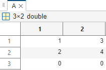
You can also enter a value in an empty row or column. For example, select an empty matrix element in the third column and enter a value for the element. The Variables editor saves the value you entered and fills the remaining elements in the column with empty values.
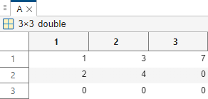
For table or timetable variables, you can display quick insights in the Variables editor to better understand the data.
To display a small chart or set of statistics in the header of each variable in a table, on the View tab, select Sparklines or Summary Statistics, respectively.
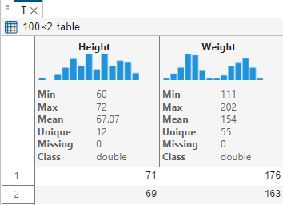
You can create a plot that is synchronized with data values using the Variables editor. You can also interactively brush the linked plot.
To create a plot for selected data, on the Variable tab, choose a plot type from the gallery. The plotted data is automatically linked to the workspace variable, so if you change the data, the figure refreshes to reflect the change. Additionally, you can customize the format of the figure using the Plot Options button on the Variable tab. For example, for a column vector in the Variables editor, select the column header and create a linked line plot.
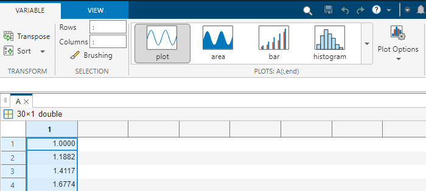
Then, to enable brushing, on the Variable tab, in the Selection section, click Brushing. Select some data in the Variables editor to highlight the corresponding data points in the figure. For example, brush the first few elements of a column vector in the Variables editor to highlight the corresponding data points in red on the linked line plot.
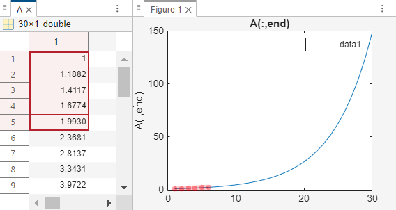
Then, you can create a logical variable indicating the brushed data points. On the Variable tab, in the Variable section, select New from Selection > New Logical Variable from Selected Indices > New Column Vector Indicating Row Selection.
For more information about creating a linked plot and brushing the data,
see linkdata and brush.
Using the Variables editor, you can select a subset of data in a variable and interactively create a new variable from the selection.
For example, to create a new table from selected data in an existing table in the Variables editor, on the Variable tab, in the Variable section, select New from Selection > New Workspace Variable from Selection > New Table.
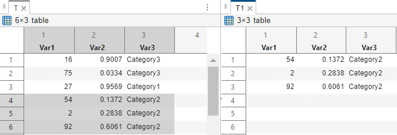
You can also select a subset of data in a variable and insert a logical
vector or variable into the data based on the selection. For example, for a
table, on the Variable tab, in the
Variable section, select New from Selection > New Logical Variable from Selected Indices > Insert Logical Variable in Table. The new table variable is true for rows
you selected in the original table.
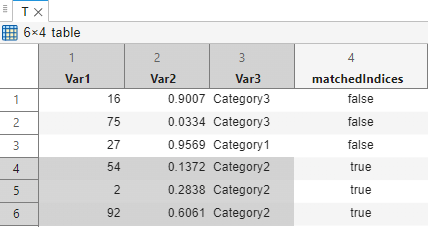
Programmatic Use
Limitations
The maximum number of elements in a variable that you can open depends on your operating system and the amount of physical memory installed on your system.
The Variables editor does not support viewing the contents of some variables, such as tall arrays and sparse arrays.
You can view and edit the contents of a table only when the number of variables is fewer than 5000. When the number of variables is at least 5000, you can only view the table properties.